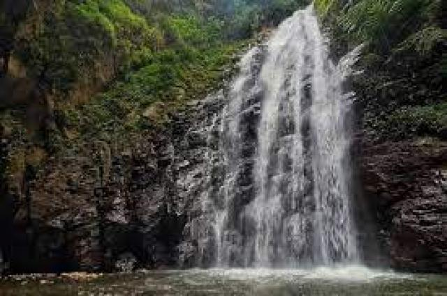
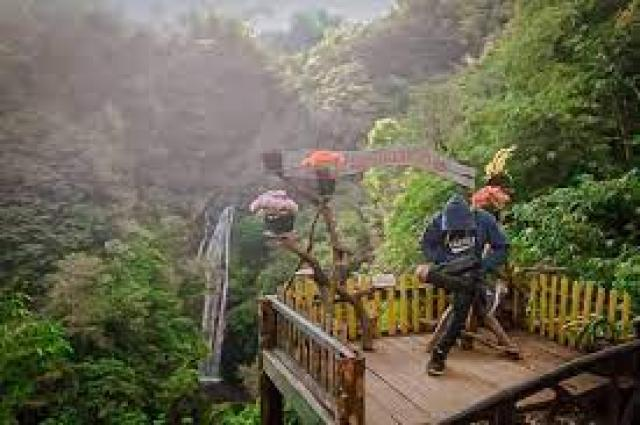
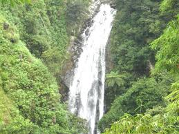

Curug
Curug Muara Jaya
Kampung Apuy, Desa Argamukti, Argapura




Ada apa di sini?
Curug Muara Jaya, yang juga dikenal sebagai Curug Apuy, punya air terjun bertingkat di kaki Gunung Ciremai. Setelah melihat curug dari jalur pengunjung, kamu bisa duduk sebentar di saung.
Fasilitas di lokasi
- Parkir
- Kamar mandi
- Musala
- Warung makan
- Saung istirahat
Sebelum berangkat
- Jam buka
- Cek jam kunjungan ke Desa Argamukti. Cek info Desa Argamukti.
- Tiket & parkir
- Rp15.000 per orang. Parkir motor Rp3.000 dan mobil Rp5.000, menurut publikasi desa Juli 2024. Cek tarif terbaru sebelum berangkat.
Lokasi
Buka rute di Google MapsIkuti jalur pengunjung dan bawa kembali bungkus makanan.